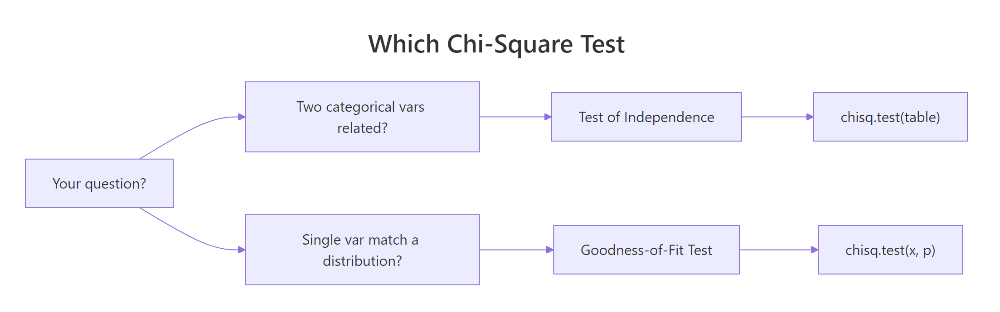
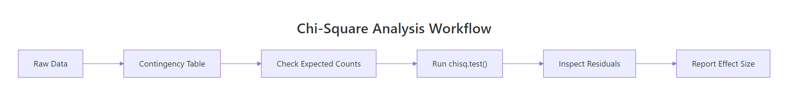
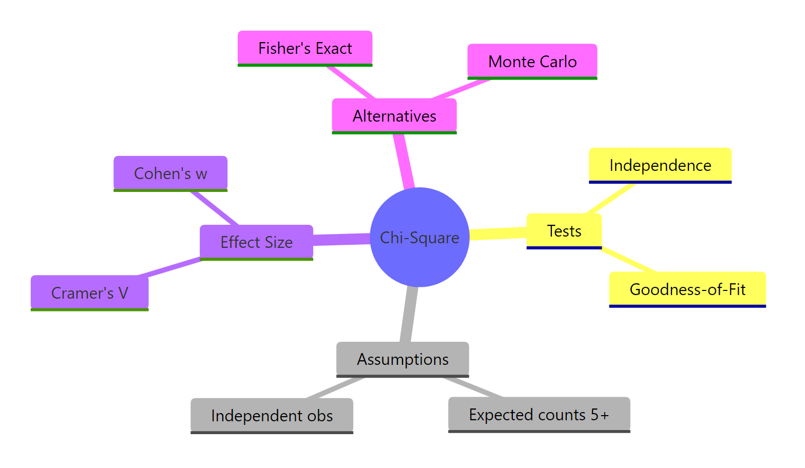

Chi-Square Tests in R: Independence, Goodness-of-Fit, With Effect Sizes
The chi-square test compares observed counts against expected counts to answer two questions with one function: are two categorical variables related (test of independence), and does one categorical variable follow a stated distribution (goodness-of-fit)? R handles both through chisq.test().
When should you use a chi-square test?
Reach for chi-square whenever your question involves counts of categories, not means. Have a two-way table of hair and eye color, and want to know whether they're related? That's a test of independence. Have a single variable and want to compare observed counts against a theoretical distribution (like a fair die)? That's goodness-of-fit. Both live inside chisq.test(), and both return the same two numbers: a chi-square statistic and a p-value.
Let's run one right now on a classic built-in dataset. HairEyeColor is a 3D table of hair colour, eye colour, and sex; we'll collapse it to a 2-way Hair × Eye table and ask whether the two traits are related.
A chi-square statistic of 138.29 on 9 degrees of freedom, with a p-value under 2.2e-16, says hair and eye colour are very much not independent in this sample. People with blond hair have far more blue eyes than chance would predict; later we'll see exactly which cells drive that finding.
chisq.test() assumes the numbers you give it are absolute frequencies. If you feed it percentages or proportions, you will get a wrong p-value with no warning.Try it: Use chisq.test() on table(mtcars$cyl, mtcars$am) to test whether number of cylinders and transmission type are independent in the mtcars dataset.
Click to reveal solution
Explanation: table() builds the 2-way contingency table, and chisq.test() runs the test. The warning fires because some expected counts are below 5, which we'll address in the assumptions section.
How do you run a chi-square test of independence?
The test of independence answers "are these two categorical variables associated?" The null hypothesis is that they're independent, i.e., knowing one tells you nothing about the other. If chisq.test() returns a small p-value, you reject independence and conclude they're related.

Figure 1: Choosing between the test of independence and goodness-of-fit.
Most real data arrives as one row per observation, not as a pre-built table. You build the contingency table with table(), then pass it to chisq.test().
With X-squared = 8.74, df = 2, and p = 0.013, we reject independence at the 5% level. In this garage, manual cars cluster in the 4-cylinder group while automatics dominate the 8-cylinder group.
The returned object carries a lot more than what print() displays. You can pull out observed counts, expected counts, the statistic, degrees of freedom, and the p-value individually.
The $expected matrix shows what each cell would contain if cylinders and transmission were truly independent: roughly 6.5 manual 4-cylinders, not the 8 we actually observed. Bigger gaps between observed and expected mean a bigger chi-square.
Try it: Build a table of mtcars$gear versus mtcars$am and test whether the two are independent.
Click to reveal solution
Explanation: Gear count and transmission type are strongly related: 3- and 4-gear cars are mostly manual/automatic in opposite proportions, which shows up as a tiny p-value.
How do you run a chi-square goodness-of-fit test?
Goodness-of-fit flips the question. Instead of two variables, you have one variable and a claimed distribution. Does your observed count vector look like it came from that distribution? The function is the same, chisq.test(), but you pass the counts as x and the hypothesized probabilities as p.
The simplest case is "all categories equally likely." Suppose we rolled a die 152 times and saw the counts below. Is it a fair die?
With p = 0.56, we do not reject fairness. The observed counts wander around 152/6 ≈ 25.3, but not further than sampling noise would explain on 5 degrees of freedom (k - 1 for k = 6 categories).
Real hypotheses rarely say "equal." Classical genetics predicts Mendel's 9:3:3:1 ratio for a dihybrid cross. Pass the ratio as p, and R will normalise it for you if you set rescale.p = TRUE, or you can divide yourself.
A p-value of 0.93 is famously high, and the data match the 9:3:3:1 prediction almost perfectly on 3 degrees of freedom (k - 1 for k = 4 categories).
rescale.p = TRUE when your p vector doesn't sum to 1. You can pass p = c(9, 3, 3, 1) with rescale.p = TRUE and skip the manual division. It's safer than hand-normalising when the ratio is long.Try it: Human blood types in a reference population are roughly 45% O, 40% A, 11% B, 4% AB. You collect 500 donors with counts 230, 190, 60, 20. Test whether the sample matches the reference distribution.
Click to reveal solution
Explanation: Pass the reference proportions to p. A p-value of 0.69 says the sample is consistent with the reference distribution.
What are the assumptions of the chi-square test?
Three assumptions hold the chi-square test together:
- Independent observations. Each count comes from a separate, independent unit. Repeated measurements on the same subject break this.
- Expected counts large enough. The usual rule is that every expected count should be ≥ 5, and no fewer than 80% of cells should be below 5. Below that, the chi-square approximation to the sampling distribution gets unreliable.
- Fixed categories, random sampling. The categories are defined before data collection; within that frame, observations were sampled randomly.
The most common violation is number 2. You can check it directly from the test object.
Every expected count is below 5, so the chi-square p-value for this table should not be trusted. R itself flags this with the message "Chi-squared approximation may be incorrect" when you call chisq.test() without suppressWarnings().
Try it: Given the 2×3 table below, check whether every expected count is ≥ 5.
Click to reveal solution
Explanation: all(ex_test$expected >= 5) returns a single TRUE if every cell clears the threshold.
How do you interpret Pearson residuals?
A significant chi-square tells you something is off, but not where. Pearson residuals fix that. Each cell's residual is its standardized gap between observed and expected: positive when the cell has more observations than independence predicts, negative when it has fewer.

Figure 2: Standard workflow for a chi-square analysis.
R gives you two residual matrices:
$residuals: Pearson residuals, $(O - E) / \sqrt{E}$. Useful for the$statisticmath but not directly calibrated.$stdres: standardized residuals, rescaled to approximately a standard normal. Cells with|stdres| > 2are roughly at p < 0.05 locally.
The biggest positive residual is Blond × Blue at 8.6, the biggest negative is Blond × Brown at −7.3. In plain language: blond people are massively over-represented among blue-eyed subjects and under-represented among brown-eyed subjects, which is what drives the huge chi-square we saw in block 1.
A tile plot makes this visible at a glance. We convert the standardized residuals to a long data frame, then let ggplot colour them red-to-blue.
Red cells flag categories that are over-represented; blue cells flag under-representation. This is the single most useful follow-up graphic after any significant test of independence.
|stdres| > 2 marks a cell worth writing about. Under the null of independence, standardized residuals are approximately standard normal, so values beyond ±2 correspond roughly to local p < 0.05. For strict inference across many cells, apply a Bonferroni correction.Try it: Using he_test, find the two cells with the largest absolute standardized residual.
Click to reveal solution
Explanation: Flatten the matrix with sort() on its absolute values; the top two entries correspond to the Blond × Blue and Blond × Brown cells.
How do you measure effect size with Cramér's V?
A p-value answers "is there a relationship?" It does not answer "how strong?" With enough data, even a trivial association can look statistically significant. Effect size fixes that.
For a test of independence, the standard effect size is Cramér's V:
$$V = \sqrt{\frac{\chi^2}{n \cdot \min(r - 1,\ c - 1)}}$$
Where:
- $\chi^2$ is the test statistic from
chisq.test() - $n$ is the total sample size
- $r$ and $c$ are the numbers of rows and columns in the table
V ranges from 0 (no association) to 1 (perfect association). Cohen's conventions call V ≈ 0.1 small, 0.3 medium, and 0.5 large, but always calibrate against your own field.
For goodness-of-fit, the equivalent is Cohen's w:
$$w = \sqrt{\frac{\chi^2}{n}}$$
where $n$ is again the total count. Same small/medium/large conventions.
Hair and eye colour show a medium-sized association (V ≈ 0.28), strong enough to be practically meaningful and not just statistically significant. The Mendel cross gives an effect size of essentially 0, confirming that observed counts line up tightly with the 9:3:3:1 prediction.
Try it: Compute Cramér's V for the cylinders × transmission result cyl_am_test from an earlier section.
Click to reveal solution
Explanation: The function we defined works on any chisq.test() result. V = 0.52 flags a large effect, even though the table is small.
When should you use Fisher's exact test instead?
When expected counts are small, the chi-square approximation breaks down. Two robust alternatives live in base R:
- Fisher's exact test (
fisher.test()): uses the exact hypergeometric distribution, so no approximation is needed. Designed for 2×2 tables; also works on larger tables at higher computational cost. - Monte-Carlo p-value (
chisq.test(..., simulate.p.value = TRUE, B = 10000)): simulatesBtables under the null and reports the proportion with a statistic at least as extreme as yours. Works on any table.
Here's a 2×2 with small counts where the plain chi-square warning fires, compared against both alternatives.
All three agree that drugs A and B differ, but the plain chi-square reports the smallest p-value (0.021) because the approximation is pushed too hard. Fisher's exact (0.030) and Monte Carlo (0.030) agree and are trustworthy on this sample size.
simulate.p.value = TRUE is the general-purpose escape hatch. It works on any size table, returns a valid p-value even when expected counts are below 5, and is built into chisq.test() itself. Set B to 10,000 or more for a stable estimate.Try it: Run Fisher's exact test on the 2×2 below, and report the p-value.
Click to reveal solution
Explanation: fisher.test() accepts the matrix directly and returns a result whose $p.value is the exact hypergeometric p-value.
Practice Exercises
Exercise 1: Admissions at Berkeley
Use the UCBAdmissions dataset (built-in 3D array: Admit × Gender × Dept). Collapse over department with margin.table(UCBAdmissions, c(1, 2)) to get a 2×2 table of admission × gender. Run a chi-square test of independence, compute Cramér's V using the helper defined earlier, and write a one-sentence conclusion.
Click to reveal solution
Explanation: The naïve analysis shows a highly significant association (p < 10⁻²⁰) with a small-to-medium effect (V ≈ 0.14), suggesting gender bias in admissions. This is the famous Simpson's paradox setup: stratifying by department reverses the story, which is why always stratifying before aggregating is a cardinal rule of categorical analysis.
Exercise 2: Detect a loaded die
Simulate 200 rolls from a six-sided die with unequal probabilities (face 6 boosted), then run a goodness-of-fit test against the fair-die hypothesis and report Cohen's w.
Click to reveal solution
Explanation: The test rejects fairness with p < 0.001, and Cohen's w ≈ 0.35 flags a medium-to-large effect, consistent with the deliberate boost on face 6.
Exercise 3: Small-sample decision
The 2×2 table below shows treatment success in a very small pilot trial. Decide between chisq.test(), chisq.test(..., simulate.p.value = TRUE), and fisher.test(). Justify your pick, then run it.
Click to reveal solution
Explanation: Two of the four expected counts fall below 5, so the chi-square approximation is unreliable. Fisher's exact test is the textbook choice for a small 2×2 and reports p = 0.020, flagging a significant difference between arms.
Complete Example
Let's tie every step together on the Titanic dataset: collapse over Age and Class to get a 2-way Sex × Survived table, then run the full workflow: assumption check, chi-square, residuals, effect size, interpretation.
How to read it. Expected counts all clear the ≥ 5 rule, so the chi-square p-value is trustworthy. The test rejects independence overwhelmingly (X² = 454, p < 10⁻¹⁵). Standardized residuals show males massively under-represented among survivors and females massively over-represented. Cramér's V ≈ 0.49 is a near-large effect, quantifying exactly how strong the "women first" pattern was on the Titanic.
Summary
| Question | R function | df formula | Effect size | ||
|---|---|---|---|---|---|
| Are two categorical variables related? | chisq.test(table(x, y)) |
(r - 1)(c - 1) | Cramér's V | ||
| Does one variable match a distribution? | chisq.test(x, p = probs) |
k - 1 | Cohen's w | ||
| Small expected counts? | fisher.test() or simulate.p.value = TRUE |
N/A | N/A | ||
| Which cells drive the result? | result$stdres ( |
value | > 2) | N/A | N/A |
Key takeaways:
- Pass raw counts, never proportions.
- Check
$expected≥ 5 before trusting the p-value. - Always report an effect size, Cramér's V for independence or Cohen's w for goodness-of-fit.
- Inspect residuals to explain where the association lives.
- Switch to Fisher's exact or Monte Carlo when the approximation warning fires.

Figure 3: Chi-square tests at a glance.
References
- R Core Team.
stats::chisq.testdocumentation. Link - Agresti, A. Categorical Data Analysis, 3rd ed. Wiley (2013).
- Cohen, J. Statistical Power Analysis for the Behavioral Sciences, 2nd ed. Lawrence Erlbaum (1988).
- Cramér, H. Mathematical Methods of Statistics. Princeton University Press (1946).
- Sharpe, D. "Your Chi-Square Test is Statistically Significant: Now What?" Practical Assessment, Research & Evaluation, 20(8), 2015. Link
- Fisher, R.A. Statistical Methods for Research Workers. Oliver & Boyd (1925).
- Kim, H.-Y. "Statistical notes for clinical researchers: Chi-squared test and Fisher's exact test." Restorative Dentistry & Endodontics, 42(2), 2017. Link
- Agresti, A. An Introduction to Categorical Data Analysis, 3rd ed. Wiley (2018).
Continue Learning
- Hypothesis Testing in R: the inference framework chi-square sits inside.
- t-Tests in R: the chi-square equivalent for comparing means of numeric groups.
- Proportion Tests in R: an alternative when your question is about a single proportion or difference of proportions.